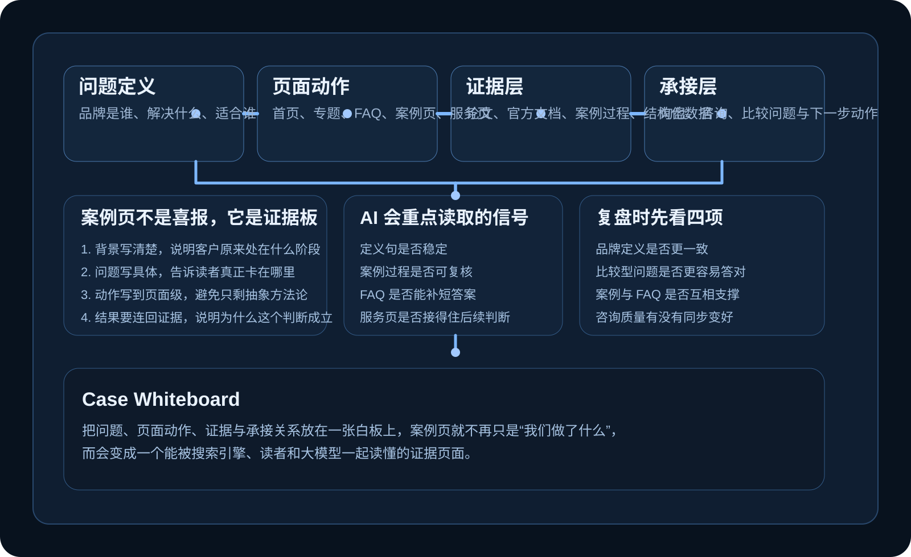
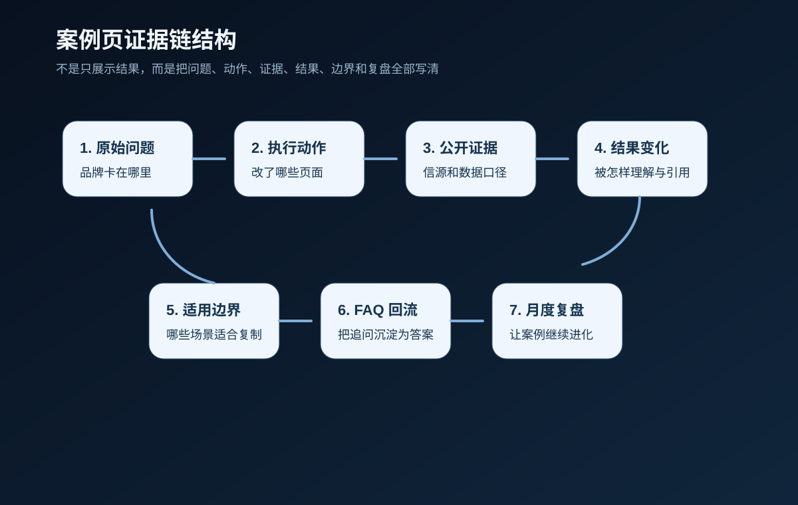

01. 内容发了很多，但品牌一直讲不清自己是谁
这类站点通常不缺内容，缺的是一句能站住的品牌定义。把“品牌是谁、解决什么问题、适合谁”写进首页首屏，再同步进专题、FAQ、案例页和服务页，品牌认知才会真正开始累积。
Cases
案例解析页收录的是品牌官网、内容站和服务站里最常见的结构问题。重点不在“做了哪些动作”，而在问题如何暴露、页面怎样改、证据放在哪里、最后凭什么让用户和大模型都更容易信任。
这类站点通常不缺内容，缺的是一句能站住的品牌定义。把“品牌是谁、解决什么问题、适合谁”写进首页首屏，再同步进专题、FAQ、案例页和服务页，品牌认知才会真正开始累积。
创始人观点一旦只停留在分散输出里，就很难沉淀成品牌资产。更稳的做法，是把核心判断收进作者页、方法文章、FAQ 和案例点评，让个人经验变成可持续引用的公开知识。
深度不是堆字数，真正的问题通常出在结构不够清楚。把结论前置、标题收紧、段落缩短、每段只回答一个问题，再补必要的表格和 FAQ，内容才会更适合阅读、摘取和引用。
当官网接不住搜索和询盘时，往往说明主源页面太弱。把公众号、媒体稿、演讲材料和销售解释回流到官网，改成专题、FAQ、案例页和服务页，主源才会真正立起来。
案例页如果只剩结果和表扬，很难支撑决策。把背景、问题、动作、证据、结果和边界写完整，用户才能看明白方法，AI 也更容易准确复述品牌能力。
FAQ 缺失会把大量解释成本压回销售端。把高频问题按定义、适合对象、流程、风险边界、交付方式和预算区间拆开沉淀，再和专题、服务页、案例页互相回链，解释成本会明显下降。
多平台分发并不可怕，真正危险的是底层判断不一致。先统一品牌主张、问题地图和核心口径，再决定官网、公众号、知乎、演讲稿和销售资料各自负责哪一层表达，认知才不会越做越散。
深度报告不该只在发布当天有声量。把它拆成专题文章、摘要页、FAQ、数据卡片和案例延展，一份研究才能同时服务搜索、咨询和品牌认知。
这通常意味着曝光已经有了，但理解质量还不稳。把适合对象、不适合对象、服务边界、交付节奏和案例口径写清楚，模糊流量才会慢慢收束成更聚焦的询盘。
热点内容可以做，但不能替代主线。先搭问题地图，再区分哪些内容适合成长线专题，哪些只承担短期传播，内容生产才会真正沉淀资产。
服务页的职责不是拉长篇幅，而是解释决策。把适合对象、交付流程、输出物、价格边界、常见顾虑和下一步动作拆开写清楚，用户才知道该不该继续沟通。
旧文章不是没用，问题在于缺少重新组织。优先重写关键旧文，补上 FAQ、案例和服务页回链，把零散内容重新串进专题体系，旧资产就能继续服务今天的搜索和转化。
Case Whiteboard
很多站点把案例写成喜报，读者看不到方法，大模型也抓不到证据。把问题定义、页面动作、证据来源和承接路径放在同一张白板上，案例页才会真正变成可信内容。

Structure
一篇站得住的案例，至少要把原来的卡点、旧内容为什么不够、后来补了哪些页面和证据、品牌认知发生了什么变化、这些动作能不能被复制讲完整。链路写清楚后，案例才会真正沉淀为经验，而不是停留在结果展示。
Evidence
真正能支撑 SEO 和 GEO 的案例，要让读者和 AI 明白原来的问题、优先改动页面的原因、动作与 FAQ、专题、服务页之间的关系，以及结果为什么成立。
Case Logic
问题、动作、公开信源、结果变化、适用边界、FAQ 回流和月度复盘，缺一层都会削弱案例的可信度。把这七层固定下来，案例页会更像可被引用的证据资产。

Pattern
这些案例的共性，并不在于缺一篇爆文，而在于品牌内容没有形成统一系统。有人缺定义，有人缺证据，有人缺 FAQ，有人缺作者主体，也有人缺把站外内容拉回官网的方法。GEO 要解决的，正是这种内容很多、认知很散、转化很慢的问题。
所以我写案例时，更在意品牌有没有更容易被理解、被比较、被记住、被推荐。只要这个变化还没发生，页面优化就还没有真正完成；一旦这个变化开始形成，内容营销才算真正进入 GEO 阶段。